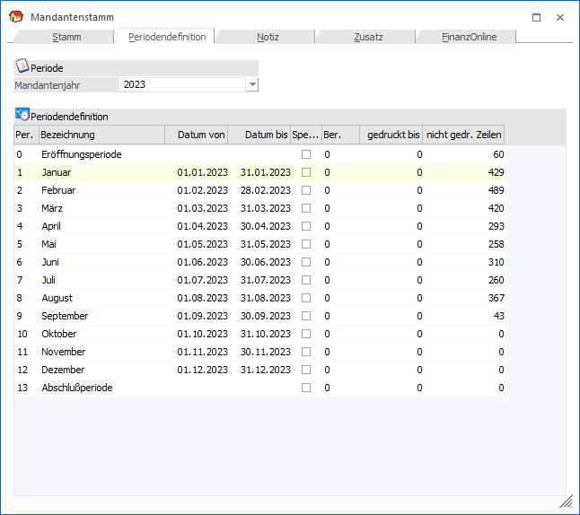
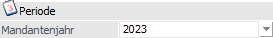
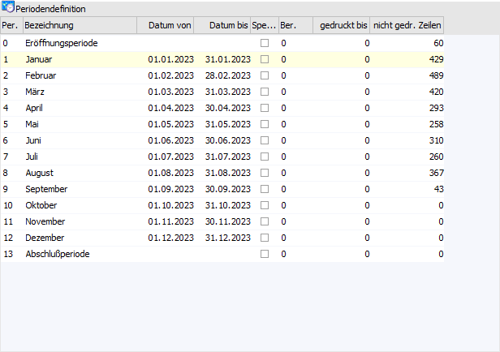
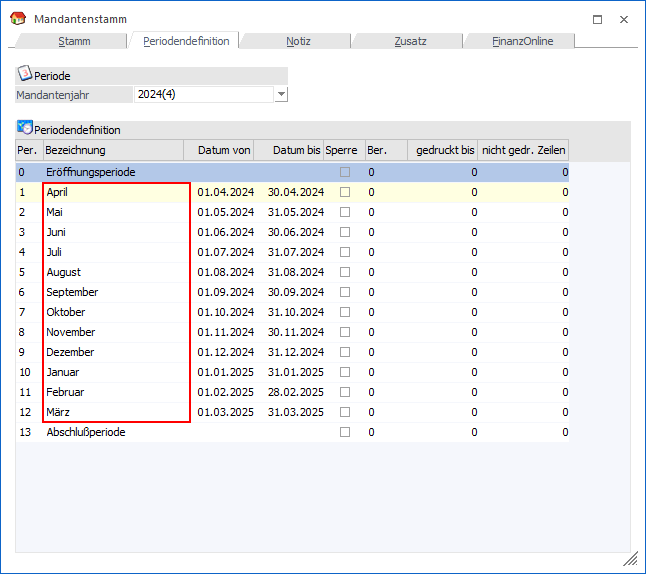
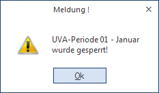

Die Einstellungen dieses Registers stehen im direkten Zusammenhang mit dem UVA-Druck, weil durch den UVA-Druck gewisse Daten zurückgeschrieben werden. Des Weiteren werden hier die einzelnen Perioden definiert (Bezeichnung, Gültigkeit).

Periode

Ø Mandantenjahr
Aus der Auswahlliste kann das aktuelle Mandantenjahr (d.h. jenes Jahr, in welchem das Wirtschaftsjahr endet), sowie die 3 darauffolgenden Jahre, ausgewählt werden.
Nach Bestätigung dieser Auswahl wird die Tabelle mit allen Perioden gefüllt. Hier kann die Periodendefinition für Folgejahre (z.B. für unregelmäßige Perioden wie sie in den USA verwendet werden) hinterlegt werden. Bei einem Jahresabschluss wird dann geprüft, ob bereits Periodeneinstellungen vorhanden sind - ist das der Fall, werden diese übernommen, ansonsten werden sie gemäß dem Standardvorschlag übernommen.
Periodendefinition

Ø Periodennummer
Ist fix und kann nicht verändert werden.
Ø Bezeichnung
Die Periodenbezeichnung kann editiert werden. Bei abweichenden Wirtschaftsjahren ist dies auch sinnvoll.
Beispiel
Im Register "Stamm" wird definiert, dass das Wirtschaftsjahr von Periode April 2024 bis Periode März 2025 geht. Buchungen vom April sollen jedoch in die 1. Periode gebucht werden, da es die 1. Periode des Wirtschaftsjahres ist. D.h. im Stamm wird angegeben, dass WJ-Beginn die 1. Periode ist.
Da die Periode 1 standardmäßig die Bezeichnung "Januar" hinterlegt hat, würde dies bei den verschiedenen Auswertungen verwirren, daher sollte die Bezeichnung der Periode 1 in diesem Beispiel auf "April" abgeändert werden:

Ø Datum von / bis
Das "Datum von" kann editiert werden, das "Datum bis" ergibt sich aufgrund des "Datum von" von der nächsten Periode und kann nicht editiert werden (ausgenommen ist die letzte Periode des Wirtschaftsjahres, bei dieser kann auch das "Datum bis" editiert werden).
Das Datum kann nur geändert werden, wenn noch keine Buchung im Mandanten vorhanden ist. Beim Jahreswechsel wird zu den Datümern des Vorjahres 1 Jahr addiert.
Beispiel
Die Periode "1 - April" hat einen Zeitraum vom "03.04." bis "25.04.":
ü Eine Buchung vom 01.04. kann nicht durchgeführt werden --> falsches Wirtschaftsjahr
ü Eine Buchung vom 05.04. kommt in die Periode 1 April
ü Eine Buchung vom 28.04. kommt in die Periode 2 Mai
Zusammenhang mit UVA-Druck
Beim UVA-Druck gibt es die Option "Originalausdruck". Diese Option kann nur dann aktiviert werden, wenn der Ausdruck auf den Drucker erfolgt und auch das Summenblatt gedruckt wird.
Wird mit der Option "Originalausdruck" ein UVA-Beleg (egal ob mit oder ohne Formularen) für ein oder mehrere Monate ausgedruckt, wird die letzte Buchungsnummer im Fenster UVA-Sperre in der Spalte "gedruckt bis" zurückgeschrieben. Gleichzeitig wird diese Periode im Mandantenstamm als gesperrt markiert und es wird folgende Meldung angezeigt:

Wurde ein Originalausdruck für ein Monat durchgeführt, gibt es drei Möglichkeiten:
ü Das Monat (bzw. die Periode) kann weiterhin bebucht werden. Jede weitere Buchung in diese Periode wird im Fenster UVA-Sperre in der Spalte "nicht gedr. Zeilen" ausgewiesen. Daran ist auch ersichtlich, ob ein weiterer UVA-Beleg gedruckt werden soll oder nicht. Die Periode muss nach dem Originalausdruck im Mandantenstamm wieder freigegeben werden.
ü Das Monat (die Periode) soll nur von bestimmten Usern bebucht werden können. Diese Sperre wird aufgrund der Berechtigungsstufe (Priorität) des Users bestimmt. Dazu wird in der Spalte "Berechtigung" im Fenster UVA-Sperre die Priorität eingegeben, ab der man berechtigt ist, diese Periode zu bebuchen. Vorher muss die Checkbox Sperre deaktiviert werden.
Beispiel
Die Abschlussperiode darf nur vom Bilanzbuchhalter bebucht werden, der die Priorität 90 hat. Alle anderen Buchhalter haben die Berechtigungsstufe 50. Im Feld Berechtigung der Abschlussperiode wird daher die Berechtigungsstufe 90 eingetragen. Alle User, die eine Berechtigung größer gleich 90 haben, dürfen in dieser Periode buchen.
ü Die Periode darf überhaupt nicht mehr bebucht werden. Dazu bleibt die Checkbox "Sperre" aktiviert. Dadurch wird gesteuert, dass KEIN User, egal welcher Berechtigungsstufe, die gesperrte Periode bebuchen darf - es erfolgt die Meldung "Keine Berechtigung um den Monat X zu bearbeiten".
Durch Aktivieren der Checkbox "Sperre" wird auch ein neuerlicher UVA-Druck der entsprechenden Periode verhindert.
Im Menüpunkt…
1 WinLine FIBU
1 Auswertungen
1 Steuer-Meldungen
1 Umsatzsteuer-Voranmeldung
… kann durch Anklicken des INFO-Buttons eine Übersichtsliste über alle Perioden und ihren "Zustand" gedruckt werden. In dieser Liste werden folgende Informationen angezeigt:
Ø Periode und Bezeichnung
Weisen auf die Monate hin.
Ø Nicht gedruckte Journalzeilen
Hier wird angezeigt, für wie viele Journalzeilen pro Monat noch kein Originalausdruck gemacht wurde.
Ø Originalausdruck bis
Hier wird angezeigt, mit welcher Journalzeile der Originalausdruck der entsprechenden Periode durchgeführt wurde.
Ø gesperrt?
Wird hier "nein" angezeigt, kann die Periode jederzeit bebucht werden.
Wird hier "ja" angezeigt, wurde die Periode gesperrt und kann nicht mehr bebucht werden. Ein Aufheben der Sperre ist aber jederzeit möglich.
Ø Berechtigungsstufe
Wird hier ein Wert angezeigt, können nur solche User die Periode bebuchen, deren Berechtigungsstufe größer gleich der angezeigten Berechtigungsstufe ist.
Dieser Ausdruck kann sowohl auf Bildschirm als auch auf dem Drucker gemacht werden.